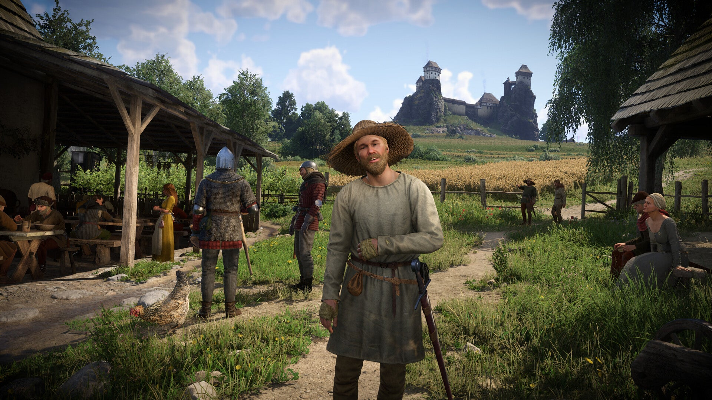

2018 · Warhorse Studios
Kingdom Come: Deliverance
O início da saga. Após a destruição de Skalitz, Henry busca vingança e é acolhido por Sir Radzig. Entre o campo e o mosteiro de Sasau, o jogador aprende a ler, lutar, caçar e sobreviver num mundo que nada perdoa. Um marco do realismo histórico nos games.